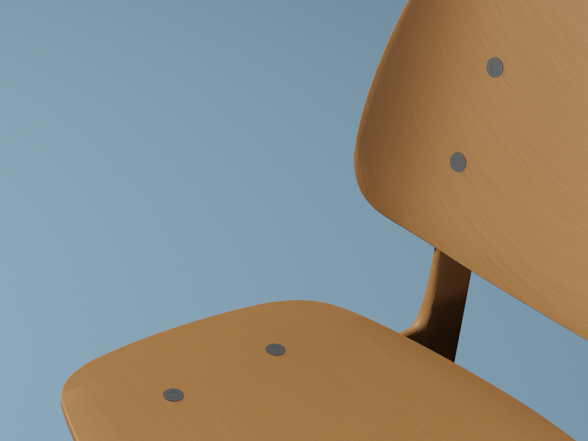
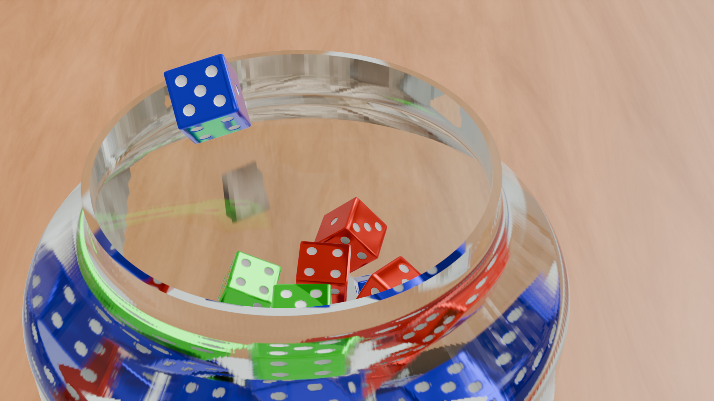
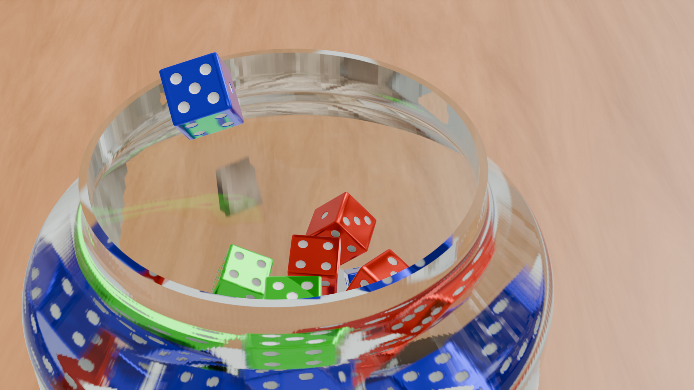
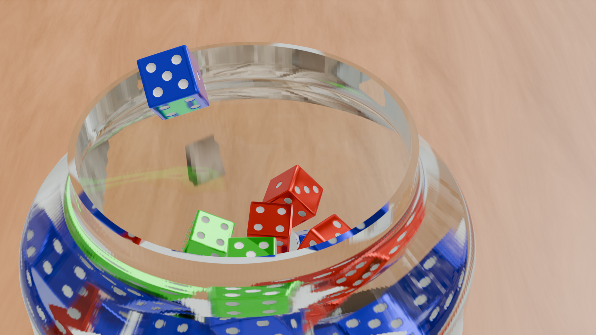

Tool used: Blender. A 3D chair model with a realistic wooden texture. The main goal was to design a chair with curved elements,
such as the seat and backrest, to capture the complexity of real furniture. Additionally, the project focused on
experimenting with lighting to create a clean studio light setup.

Palace
Tool used: Blender. A 3D model of Pförten Palace, the former residence of Count Heinrich von Brühl.
The real building is located in the village of Pförten, today known as Brody in Poland.
The model captures the unusual floor plan with many edges, as well as architectural details such as windows,
roof structures, chimneys, and stairs.
Dice
Tool used: Blender. A 3D model of a classic six-sided dice, designed in red with white pips.
The model demonstrates simple geometric precision, smooth edges, and realistic shading.
Glass with dice
Tool used: Blender. A realistic glass with a detailed glass texture was created. A single dice, modeled from scratch,
was used to generate multiple copies through an array setup. Physics simulations allowed the dice to sequentially fall
into the glass naturally. A 360-degree background image provided immersive lighting and reflections. The project
demonstrates skills in modeling, texturing, physics simulation, and scene composition.

Websites
Progressive Web App (PWA) Calendar
Developed a Progressive Web App (PWA) using HTML, CSS, and JavaScript
Calculates and displays a yearly calendar for the period 2000–2099
Displayed Information:
Year, months, days, and calendar weeks
Current day highlighted if the current year is displayed
Public holidays in Saxony, Germany visually highlighted
PWA Features:
Installable on devices with icons and manifest
Service worker implemented for offline capability
Accessible via HTTPS on a web server or local server for installation
Header shows the displayed calendar year and updates the page's "title" tag
Year selection via top bar with select element
Top bar can be shown or hidden via button
Button to reload the PWA and return to the current year
Interactive Features:
Clicking or tapping on a holiday displays its name
Handles cases where the current date and a holiday fall on the same day
There are two types of holidays: static (e.g., New Year) and dynamic (e.g., Good Friday)
Uses formulas for dynamic holidays (e.g., Gauss’ Easter formula)
Correctly accounts for leap years.
Portfolio
This website was developed using HTML, CSS, and JavaScript. It showcases personal and professional information,
including an introduction, technical skills, projects. The design features a full-width header with a profile image,
responsive layout, and interactive navigation. Attention was given to clean typography, structured sections, and
user-friendly interface, making the site both visually appealing and functional across devices.

 
